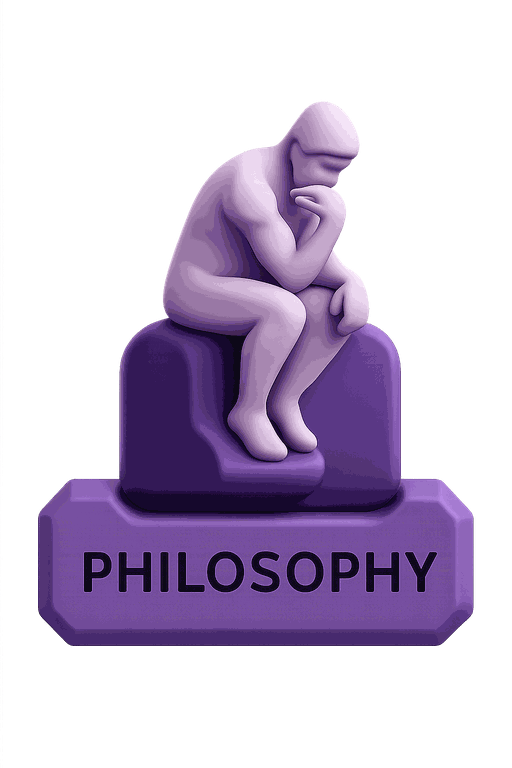
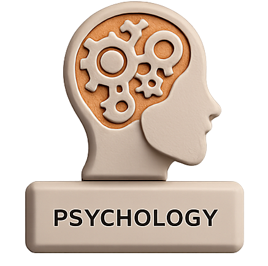

1
2
3
4
5
6
7
8
9
1
0
עברית
English
Corpus
Daily Notion.
Sign In
Sign Up
Sign In
or
G
Continue with Google
Corpus
Choose Your Path
Pick a subject to begin. You can switch anytime.

Wisdom for the everyday
How the world works

🔒
Understand the mind
Corpus
0
0
1
Corpus
0
0
1
Corpus
טוען...
0
ימים ברצף
שפה
עברית
✓
English
התנתק
Corpus
✦
+0
XP earned
0
Answer streak
🏆
עלית רמה!
מדהים!
סגור
המשך ←
פרק בונוס נפתח!
אתיקה ובינה מלאכותית · קאנט פוגש את ChatGPT
בוא נראה ←
English
גודל טקסט
A-
100%
A+